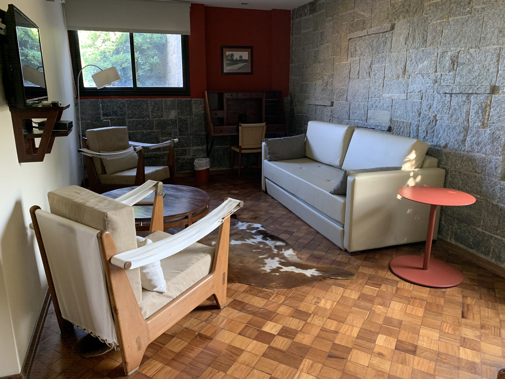
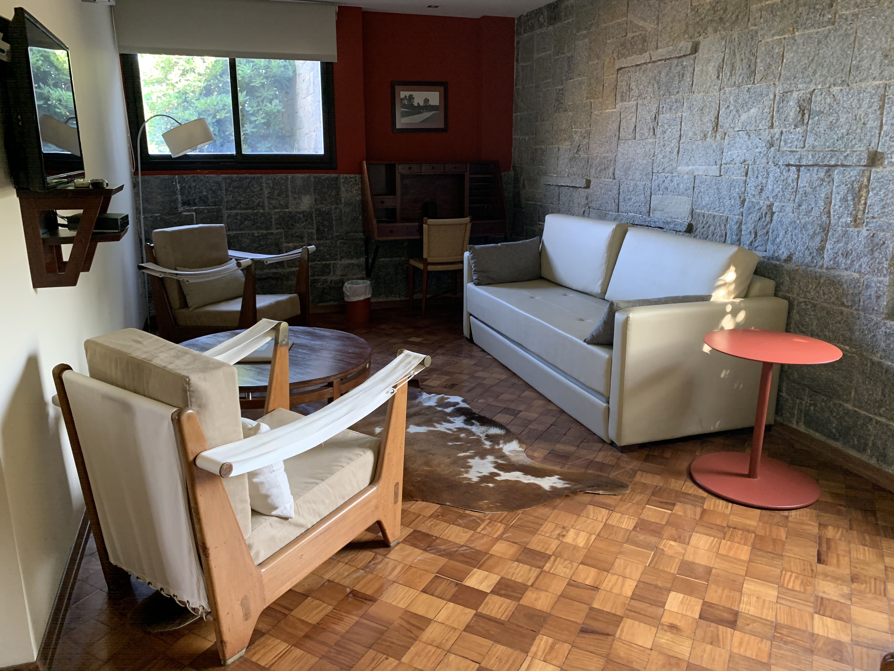
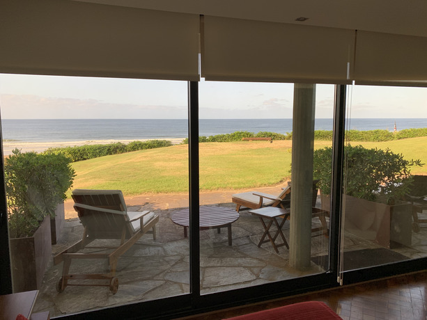
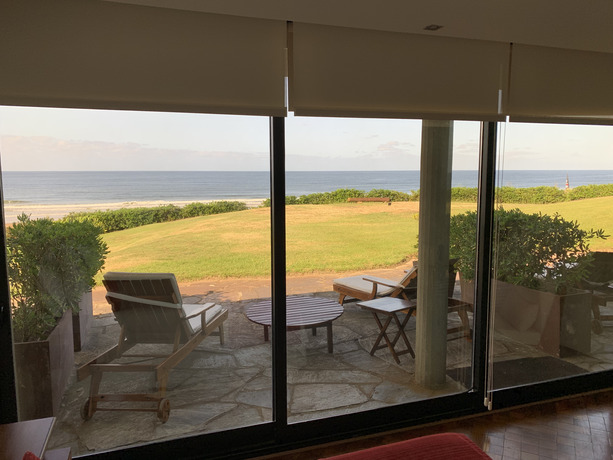

BIENVENIDOS AL PARAÍSO
Solana del Mar, un edificio único construido por el Arquitecto Antonio Bonet en la entrada hacia Punta del Este, ubicado en Portezuelo sobre la playa Solanas, playa que recibe el nombre por referencia a esta propiedad. Emblemático edificio donde se fusionan ingeniería y naturaleza, es el pilar base para la urbanización de Punta Ballena realizada en 1947. Antoni Bonet i Castellana, Arquitecto, Urbanista y Paisajista crea la Solana del Mar, combinando elementos de la arquitectura pos racionalista con la naturaleza, considerando la flora, el mar y la topografía del lugar como elementos vitales en su creación. El resultado, una obra arquitectónica sobre la tranquila playa de Solanas que dedica su potencial a brindar un espacio de relax y descanso para sus huéspedes, hoy en la modalidad de casa de playa & eventos.
Habitaciones
Sunset
Exclusivo apartamento en la planta alta de Solana del Mar, moderno y completamente equipado. La Suite Sunset está rodeada de una vista increíble de la playa Solanas y una exclusiva terraza exterior de 120 mts2 con acceso interno o por el jardín. Sus espacios son amplios y luminosos con ventanales al mar, dormitorio con baño en suite, y living con estufa a leña y cocina integrada.
Bonet
 

Rinde homenaje a Antonio Bonet. En sus 56 m2, se podrá disfrutar de un agradable momento junto a la chimenea, tomar un relajante baño en el jacuzzi o simplemente disfrutar de una vista espectacular. La Suite Bonet cuenta con vista al mar y salida directa a la playa.
Clásica
 


Solana del Mar cuenta con cuatro habitaciones de igual categoría con vista al mar. Todas son espaciosas, desarrolladas en 30 m2, y con mobiliario original de Bonet distribuido de forma de aprovechar cada espacio. Desde sus amplios ventanales y su terraza privada se podrá disfrutar de una hermosa vista al mar con salida al jardín y bajada directa a la playa.